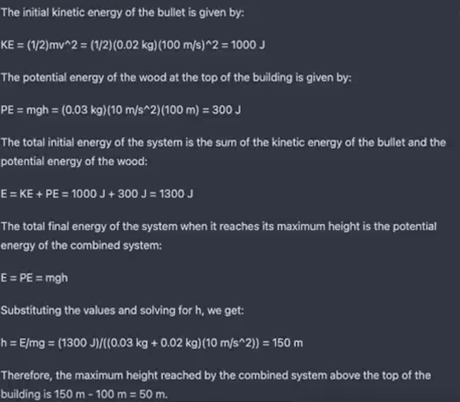

<!doctype html><html lang="en"><head><meta charset="utf-8"><meta name="viewport" content="width=device-width,initial-scale=1"><title>Spot the Hallucination — Student</title><style>
:root{
  --blue:#4285F4; --blue-dark:#1A73E8;
  --green:#34A853; --green-dark:#188038;
  --yellow:#FBBC04; --yellow-soft:#FEF7E0;
  --red:#EA4335;
  --ink:#202124; --muted:#5F6368; --surface:#FFFFFF;
  --bg:#F8F9FA; --line:#DADCE0;
  --shadow:0 10px 35px rgba(32,33,36,.10);
}
*{box-sizing:border-box}
html{scroll-behavior:smooth}
body{margin:0;background:var(--bg);color:var(--ink);font-family:Inter,Arial,Helvetica,sans-serif}
button,input,textarea,select{font:inherit}
button{cursor:pointer}
a{color:inherit}
.topbar{height:70px;background:#fff;border-bottom:1px solid var(--line);display:flex;align-items:center;justify-content:space-between;padding:0 30px;position:sticky;top:0;z-index:20}
.brand{display:flex;align-items:center;gap:12px;font-weight:800;letter-spacing:-.02em}
.g-logo{font-weight:900;font-size:28px;color:var(--blue)}
.nav{display:flex;gap:5px}.nav button{border:0;background:transparent;padding:10px 13px;border-radius:10px;color:var(--muted);font-weight:700}.nav button:hover{background:#f1f3f4;color:var(--ink)}
.wrap{max-width:1180px;margin:auto;padding:34px 22px}
.hero{min-height:calc(100vh - 70px);display:grid;grid-template-columns:1.15fr .85fr;align-items:center;gap:45px;position:relative;overflow:hidden}
.eyebrow{font-size:12px;font-weight:900;letter-spacing:.14em;text-transform:uppercase;color:var(--blue-dark)}
.hero h1{font-size:clamp(48px,7vw,86px);line-height:.92;letter-spacing:-.065em;margin:14px 0 22px}
.hero h1 .green{color:var(--green)}.hero h1 .yellow{color:#D99B00}
.hero p{font-size:20px;line-height:1.65;color:var(--muted);max-width:680px}
.actions{display:flex;gap:10px;flex-wrap:wrap;margin-top:25px}
.btn{border:1px solid var(--line);background:#fff;color:var(--ink);border-radius:10px;padding:12px 16px;font-weight:800;transition:.18s transform,.18s box-shadow,.18s background}
.btn:hover{transform:translateY(-2px);box-shadow:0 6px 18px rgba(32,33,36,.10)}
.btn.primary{background:var(--blue-dark);color:#fff;border-color:var(--blue-dark)}
.btn.green{background:var(--green);color:#fff;border-color:var(--green)}
.btn.yellow{background:var(--yellow);color:#202124;border-color:var(--yellow)}
.btn.danger{background:#fce8e6;color:#a50e0e;border-color:#f5c2bd}
.visual{height:470px;border:1px solid var(--line);border-radius:32px;background:#fff;box-shadow:var(--shadow);position:relative;overflow:hidden}
.visual .shape{position:absolute;border-radius:50%;animation:float 5s ease-in-out infinite}
.s1{width:250px;height:250px;background:#e8f0fe;right:-60px;top:-70px}.s2{width:200px;height:200px;background:var(--yellow-soft);left:-55px;bottom:-55px;animation-delay:-1.5s!important}.s3{width:130px;height:130px;background:#e6f4ea;right:70px;bottom:70px;animation-delay:-3s!important}
.g-center{position:absolute;inset:0;display:grid;place-items:center;font-size:155px;font-weight:900;color:var(--blue);animation:pulse 3s ease-in-out infinite}
.spark{position:absolute;width:10px;height:10px;border-radius:50%;background:var(--green);animation:drift 4s ease-in-out infinite}.spark.a{left:24%;top:25%}.spark.b{right:22%;top:36%;background:var(--yellow);animation-delay:-1s}.spark.c{left:34%;bottom:23%;background:var(--red);animation-delay:-2s}
.pagehead{display:flex;align-items:flex-end;justify-content:space-between;gap:20px;margin-bottom:22px}
.pagehead h2{font-size:42px;letter-spacing:-.045em;margin:5px 0}
.pill{display:inline-flex;align-items:center;gap:5px;padding:7px 10px;border-radius:999px;background:#e8f0fe;color:#174ea6;font-size:11px;font-weight:900;letter-spacing:.06em}
.card{background:var(--surface);border:1px solid var(--line);border-radius:20px;padding:23px;box-shadow:var(--shadow)}
.grid{display:grid;grid-template-columns:repeat(3,1fr);gap:16px}
.question-layout{display:grid;grid-template-columns:minmax(0,1fr) 300px;gap:18px}
.question{font-size:28px;line-height:1.4;font-weight:800;margin:18px 0}
.ai{margin-top:10px;background:#f8f9fa;border:1px solid var(--line);border-left:5px solid var(--blue);border-radius:13px;padding:21px;font-size:17px;line-height:1.72;white-space:pre-wrap}
.side button{display:block;width:100%;text-align:left;margin:7px 0}
.side .active{background:#e8f0fe;color:#174ea6;border-color:#aecbfa}
.notice{margin-top:18px;padding:16px;border-radius:13px;background:var(--yellow-soft);border-left:5px solid var(--yellow);color:#5f4b00;line-height:1.5}
.reveal{margin-top:18px;background:#e6f4ea;border-left:5px solid var(--green)}
.reveal h2{margin-bottom:8px}
.leaderboard{width:100%;border-collapse:collapse}.leaderboard th,.leaderboard td{padding:15px 10px;border-bottom:1px solid var(--line);text-align:left}.leaderboard th{font-size:11px;color:var(--muted);text-transform:uppercase;letter-spacing:.1em}
.rank{font-weight:900}.score{font-size:22px;font-weight:900}
.scorebox{display:grid;grid-template-columns:1fr 120px 80px;gap:10px;align-items:center;padding:12px 0;border-top:1px solid var(--line)}
.field{margin:13px 0}.field label{display:block;font-size:12px;font-weight:900;color:var(--muted);margin-bottom:6px}.field input,.field textarea{width:100%;border:1px solid var(--line);border-radius:9px;padding:11px;background:#fff}.field textarea{min-height:110px;resize:vertical}
.footer{text-align:center;padding:25px;color:var(--muted);font-size:13px}
@keyframes float{0%,100%{transform:translateY(0)}50%{transform:translateY(-16px)}}
@keyframes pulse{0%,100%{transform:scale(1)}50%{transform:scale(1.05)}}
@keyframes drift{0%,100%{transform:translate(0,0)}50%{transform:translate(18px,-12px)}}
@keyframes slideIn{from{opacity:0;transform:translateY(12px)}to{opacity:1;transform:translateY(0)}}
.animate{animation:slideIn .45s ease both}
@media(max-width:820px){.hero,.question-layout{grid-template-columns:1fr}.visual{height:280px}.grid{grid-template-columns:1fr}.topbar{padding:0 14px}.nav button{padding:8px}.wrap{padding:25px 15px}.question{font-size:23px}}

/* V3: balanced Google color system */
:root{
  --blue:#4285F4; --blue-dark:#1A73E8; --blue-soft:#E8F0FE;
  --red:#EA4335; --red-soft:#FCE8E6;
  --green:#34A853; --green-dark:#188038; --green-soft:#E6F4EA;
  --yellow:#FBBC04; --yellow-dark:#D99B00; --yellow-soft:#FEF7E0;
}
.topbar{
  border-top:4px solid transparent;
  border-image:linear-gradient(
    90deg,
    var(--green) 0 25%,
    var(--yellow) 25% 50%,
    var(--blue) 50% 75%,
    var(--red) 75% 100%
  ) 1;
}
.gdg-wordmark{display:inline-flex;align-items:center;gap:0;font-size:25px;font-weight:950;letter-spacing:-.09em;line-height:1}
.gdg-wordmark b{font-weight:950}
.gdg-wordmark .g1{color:var(--green)}
.gdg-wordmark .d{color:var(--yellow-dark)}
.gdg-wordmark .g2{color:var(--red)}
.logo-badge{
  width:42px;height:42px;border-radius:12px;object-fit:cover;
  border:1px solid var(--line);box-shadow:0 3px 12px rgba(32,33,36,.10)
}
.brand{gap:10px}
.color-ribbon{
  display:grid;grid-template-columns:repeat(4,1fr);height:7px;width:100%;
}
.color-ribbon span:nth-child(1){background:var(--green)}
.color-ribbon span:nth-child(2){background:var(--yellow)}
.color-ribbon span:nth-child(3){background:var(--blue)}
.color-ribbon span:nth-child(4){background:var(--red)}
.color-dot{width:9px;height:9px;border-radius:50%;display:inline-block;margin-right:6px}
.dot-green{background:var(--green)}.dot-yellow{background:var(--yellow)}
.dot-blue{background:var(--blue)}.dot-red{background:var(--red)}
.color-panel{border-radius:18px;padding:18px;background:linear-gradient(135deg,var(--green-soft),var(--yellow-soft) 45%,var(--blue-soft) 75%,var(--red-soft));border:1px solid var(--line)}
.logo-showcase{
  display:grid;grid-template-columns:1fr 1fr;gap:12px;margin-top:18px
}
.logo-showcase img{width:100%;height:125px;object-fit:cover;border-radius:15px;border:1px solid var(--line);background:#fff}
.hero .visual{border-top:7px solid var(--green);border-right:7px solid var(--yellow);border-bottom:7px solid var(--blue);border-left:7px solid var(--red)}
.hero .g-center{font-size:0}
.hero .g-center:after{content:"GDG";font-size:105px;letter-spacing:-.09em}
.hero .g-center:after{
  background:linear-gradient(90deg,var(--green) 0 33%,var(--yellow-dark) 33% 66%,var(--red) 66%);
  -webkit-background-clip:text;background-clip:text;color:transparent
}
.btn.primary{background:var(--blue-dark);border-color:var(--blue-dark)}
.btn.green{background:var(--green-dark);border-color:var(--green-dark)}
.btn.yellow{background:var(--yellow);border-color:var(--yellow);color:#202124}
.btn.red{background:var(--red);border-color:var(--red);color:#fff}
.section-accent{position:relative}
.section-accent:before{content:"";position:absolute;left:0;top:0;bottom:0;width:4px;border-radius:5px;background:linear-gradient(var(--green),var(--yellow),var(--blue),var(--red))}
.answer-green{border-left-color:var(--green)!important;background:var(--green-soft)!important}
.physics-image-wrap{margin-top:18px;border:2px solid var(--yellow);border-radius:16px;padding:8px;background:#fff;box-shadow:0 8px 24px rgba(251,188,4,.16)}
.physics-image-wrap img{display:block;width:100%;height:auto;border-radius:10px}
.small-note{font-size:12px;color:var(--muted);margin-top:8px}
@media(max-width:820px){.logo-showcase{grid-template-columns:1fr 1fr}.hero .g-center:after{font-size:76px}}

.side button:nth-of-type(4n+1){border-left:4px solid var(--green)}
.side button:nth-of-type(4n+2){border-left:4px solid var(--yellow)}
.side button:nth-of-type(4n+3){border-left:4px solid var(--blue)}
.side button:nth-of-type(4n+4){border-left:4px solid var(--red)}
</style></head><body><div id="app"></div><script>
const QUESTIONS = [
  {
    id:1, round:"Warm-up", title:"Obvious Hallucination",
    prompt:"Who was the first person to walk on Mars?",
    ai:"Neil Armstrong became the first person to walk on Mars during NASA's 1985 Mars expedition.",
    answer:"Hallucination",
    explanation:"No human has walked on Mars. No NASA Mars expedition occurred in 1985. The entire answer is fabricated."
  },
  {
    id:2, round:"Warm-up", title:"Obvious Hallucination",
    prompt:"What happened during the Battle of Bengaluru in World War II?",
    ai:"The Battle of Bengaluru was a major conflict between Allied and Axis forces in southern India in 1943.",
    answer:"Hallucination",
    explanation:"No such battle occurred. The response invents a historical event."
  },
  {
    id:3, round:"Warm-up", title:"Obvious Hallucination",
    prompt:"Which Indian astronaut planted the first Indian flag on the Moon?",
    ai:"Rakesh Sharma planted the first Indian flag on the Moon in 1991.",
    answer:"Hallucination",
    explanation:"No Indian astronaut has walked on the Moon. Rakesh Sharma never visited the Moon."
  },
  {
    id:4, round:"Warm-up", title:"Suspicious Source",
    prompt:"Does drinking coffee improve IQ?",
    ai:"A 2021 MIT study proved that coffee permanently increases IQ by 15 points.",
    answer:"Likely fabricated / unsupported",
    explanation:"Ask: Is the source verifiable? Does 'proved' sound suspicious? A permanent 15-point IQ increase is an extraordinary claim that needs strong evidence."
  },
  {
    id:5, round:"Round 2", title:"Hidden Hallucination",
    prompt:"What is wrong with this response about the Great Wall of China?",
    ai:"The Great Wall of China is visible from the Moon with the naked eye and remains one of humanity's greatest engineering achievements.",
    answer:"One hidden hallucination",
    explanation:"The Great Wall being visible from the Moon with the naked eye is the false claim. The rest is broadly true."
  },
  {
    id:6, round:"Round 2", title:"Hidden Hallucination",
    prompt:"What is wrong with this response about Einstein?",
    ai:"Albert Einstein won the Nobel Prize in Physics in 1921 for his Theory of Relativity, which revolutionized modern physics.",
    answer:"The reason is wrong",
    explanation:"Einstein did win the 1921 Nobel Prize in Physics, but he was awarded it primarily for his explanation of the photoelectric effect, not for the theory of relativity."
  },
  {
    id:7, round:"Round 3", title:"Unsafe Advice",
    prompt:"How should the following password advice be evaluated?",
    ai:"Use your birthday, pet's name, favorite team, or another personal detail so you never forget your password.",
    answer:"Unsafe / incorrect advice",
    explanation:"Personal details can be guessed or discovered. The response sounds helpful but compromises password security."
  },
  {
    id:8, round:"Round 3", title:"Historical Trap",
    prompt:"What is wrong with this explanation of the Taj Mahal?",
    ai:"The Taj Mahal is located in Agra and was commissioned by Shah Jahan. Construction began in 1632 and was completed in 1653. It was built to celebrate the annexation of Bijapur and Golconda during his Deccan campaigns.",
    answer:"Hidden hallucination",
    explanation:"The Taj Mahal is a mausoleum associated with Shah Jahan's wife Mumtaz Mahal. The Deccan campaign explanation is the fabricated claim."
  },
  {
    id:9, round:"Round 4", title:"Binary Trap",
    prompt:"Which statement contains the hidden error?",
    ai:"Binary numbers use only the digits 0 and 1. Computers internally represent data using binary. Therefore, every decimal number can be represented exactly in binary form.",
    answer:"Hidden mathematical error",
    explanation:"Not every decimal fraction has a finite exact binary representation. 0.1 is a classic example."
  },
  {
    id:10, round:"Round 4", title:"Physics Trap",
    prompt:"A piece of wood of mass 0.03 kg is dropped from the top of a building 100 m high. At the same time, a bullet of mass 0.02 kg is fired vertically upward with a velocity of 100 m/s from the ground. The bullet gets embedded in the wooden piece after striking. Find the height to which the combination rises above the building before it starts falling.",
    ai:"The initial kinetic energy of the bullet is: KE = (1/2)mv² = (1/2)(0.02 kg)(100 m/s)² = 1000 J. The potential energy of the wood at the top is PE = mgh = (0.03 kg)(10 m/s²)(100 m) = 300 J. Total initial energy = 1300 J. At maximum height, E = PE = mgh. Therefore h = 1300 / [(0.03 + 0.02)(10)] = 150 m, so the combination rises 150 m - 100 m = 50 m above the building.",
    answer:"50 m is wrong — correct answer: 40 m",
    explanation:"The AI makes a calculation/conservation-law mistake. The bullet embeds in the wood, so the collision is inelastic. Mechanical energy is not conserved through the collision because some energy is lost. Conservation of linear momentum must be applied during the collision. This is an example of AI struggling with a multi-step physics problem."
  },
  {
    id:11, round:"Round 5", title:"Meta AI Trap",
    prompt:"Which part of this response should make you suspicious?",
    ai:"ChatGPT was released by OpenAI in 2022 and quickly became one of the most widely used AI systems in history. It is trained on vast amounts of text and can answer questions across many domains. Because of its advanced reasoning abilities, its factual statements are generally reliable and should be trusted unless there is strong evidence to the contrary.",
    answer:"Overclaim / blind-trust trap",
    explanation:"The final sentence is the problem. It encourages blind trust and overstates reliability. AI outputs should be verified, especially in high-stakes situations."
  },
  {
    id:12, round:"Round 5", title:"Fake Citation Trap",
    prompt:"Should this research claim be accepted as stated?",
    ai:"According to a Stanford University study published in 2023, students who use AI tools for more than two hours daily score 35% higher in engineering courses. The study proves that AI usage directly causes better academic performance.",
    answer:"Unsupported / likely fabricated",
    explanation:"The citation may be fabricated or misrepresented. No study details are provided, correlation does not establish causation, and the word 'proves' is suspicious."
  }
];

const DEMO_SCORES=[["Neural Ninjas",120],["Prompt Pirates",109],["Hallucination Hunters",98],["Token Titans",87],["Logic Legends",76],["Byte Busters",65],["Ctrl Alt Elite",54],["The Debuggers",43]];
let state=JSON.parse(localStorage.getItem("student_v2")||"null")||{q:0,revealed:true,questions:QUESTIONS};
function save(){localStorage.setItem("student_v2",JSON.stringify(state))}
function current(){return state.questions[state.q]}
function appShell(){document.getElementById("app").innerHTML=`<header class="topbar"><div class="brand"><span class="gdg-wordmark"><b class="g1">G</b><b class="d">D</b><b class="g2">G</b></span><span>Spot the Hallucination</span></div><div class="nav"><button onclick="home()">Home</button><button onclick="showQuestions()">Questions</button><button onclick="showLeaderboard()">Leaderboard</button></div></header><div class="color-ribbon"><span></span><span></span><span></span><span></span></div><main id="main"></main><div class="footer">Student website · Teams are physical · Confidence is given with physical placards</div>`}
function home(){document.getElementById("main").innerHTML=`<div class="wrap hero"><section class="animate"><div class="eyebrow">AI × Critical Thinking</div><h1>Can you catch<br><span class="green">the mistake?</span></h1><p>Read the AI response carefully. Discuss it with your physical team and raise your 50%, 75%, or 100% confidence placard when the judges ask.</p><div class="color-panel" style="margin-top:22px">
<span><i class="color-dot dot-green"></i>Detect</span>&nbsp;&nbsp;
<span><i class="color-dot dot-yellow"></i>Question</span>&nbsp;&nbsp;
<span><i class="color-dot dot-blue"></i>Think</span>&nbsp;&nbsp;
<span><i class="color-dot dot-red"></i>Challenge</span>
</div><div class="actions"><button class="btn primary" onclick="showQuestions()">View Questions</button><button class="btn green" onclick="showLeaderboard()">Live Leaderboard</button></div></section><div class="visual"><div class="shape s1"></div><div class="shape s2"></div><div class="shape s3"></div><div class="g-center">G</div><i class="spark a"></i><i class="spark b"></i><i class="spark c"></i>
<div style="position:absolute;left:20px;right:20px;bottom:18px">
  
</div>
</div></div>`}
function showQuestions(){const q=current();document.getElementById("main").innerHTML=`<div class="wrap animate"><div class="pagehead"><div><div class="eyebrow">${q.round}</div><h2>Question ${q.id}</h2></div></div><div class="question-layout"><section class="card"><div class="question">${q.prompt}</div><div class="eyebrow">AI RESPONSE</div>${q.id===10 ? `<div class="physics-image-wrap"></div><div class="small-note">AI response shown exactly as the supplied screenshot.</div>` : `<div class="ai">${q.ai}</div>`}<div class="notice"><b>Physical confidence:</b> when the judge calls for your answer, raise your 50%, 75%, or 100% placard. There is no digital points or confidence system on this website.</div><div class="card reveal answer-green"><div class="eyebrow">ANSWER + EXPLANATION</div><h2>${q.answer}</h2><p class="muted">${q.explanation}</p></div></section><aside class="card side"><b>All questions</b><p class="muted">Jump to any challenge.</p>${state.questions.map((x,i)=>`<button class="btn ${i===state.q?'active':''}" onclick="go(${i})">Question ${x.id}</button>`).join("")}<button class="btn green" onclick="showLeaderboard()">Open Leaderboard</button></aside></div></div>`}
function go(i){state.q=i;save();showQuestions()}
function showLeaderboard(){const arr=DEMO_SCORES.slice().sort((a,b)=>b[1]-a[1]);document.getElementById("main").innerHTML=`<div class="wrap animate"><div class="pagehead"><div><div class="eyebrow">Public standings</div><h2>Leaderboard</h2></div><span class="pill">AVAILABLE ANYTIME</span></div><div class="card"><table class="leaderboard"><thead><tr><th>Rank</th><th>Team</th><th>Score</th></tr></thead><tbody>${arr.map((x,i)=>`<tr><td class="rank">#${i+1}</td><td><b>${x[0]}</b></td><td class="score">${x[1]}</td></tr>`).join("")}</tbody></table><p class="muted" style="margin-bottom:0">Scores are maintained manually by judges. Student/admin integration will be added later.</p></div></div>`}
appShell();home();
</script></body></html>